This is course note of Big Data Essentials: HDFS, MapReduce and Spark RDD
The world of the efficient MapReduce is based on three whales. Combiner, Partitioner, and Comparator.
Combiner
To change the usage of these IO operations and network bandwidth, you can use combiner to squash several items into one.
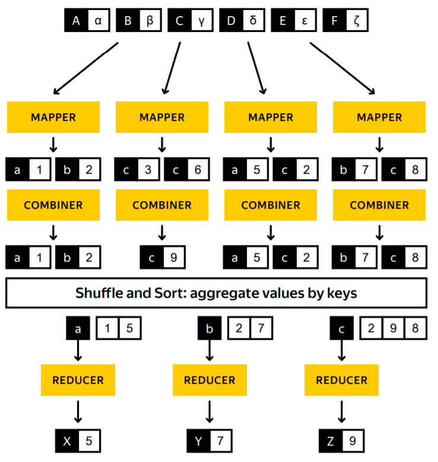
Combiner: - expects an input in the form of the reducer input and it has the same output signature as a mapper. - can be applied arbitrarily number of times between map and reduce phases. - A combiner should not change a type and format of a key and value
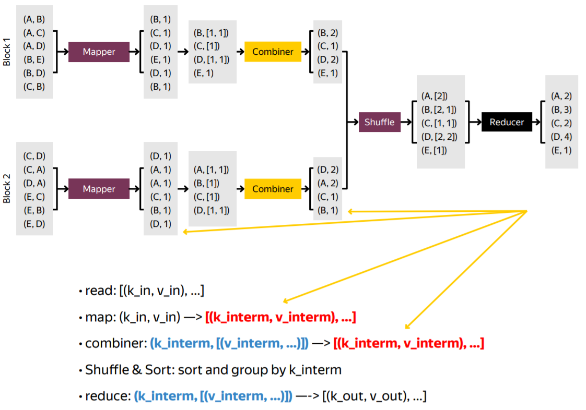
In the word count application, there is no difference between the combiner and the reducer. So you can easily call it with the following arguments.
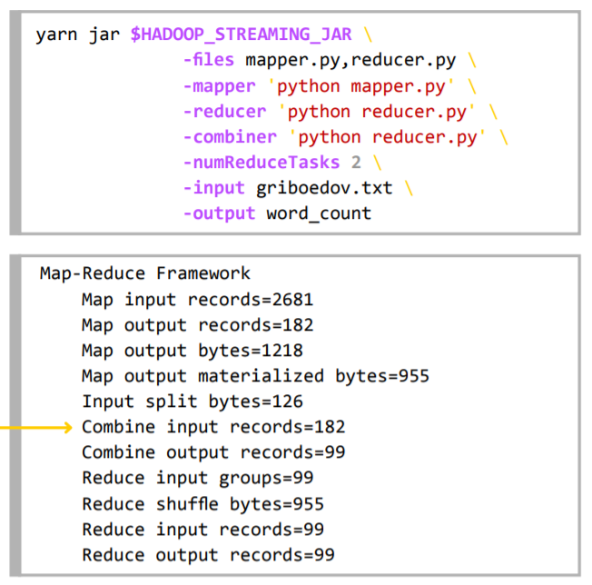
Example: Mean Value
count how many times on average you see a word in an article
- Mapper.py: print a pair containing the number of articles processed and the cumulative amount of words
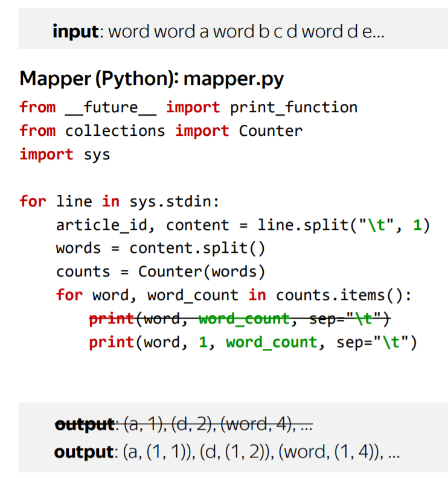
- Reducer: memorize not only the number of occurrences but also the number of articles.
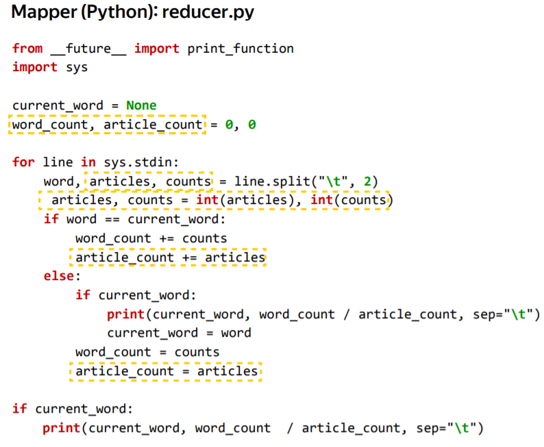
- Combiner: It could help us to speed up calculations, for the whole MapReduce job, as you will use less IO resources 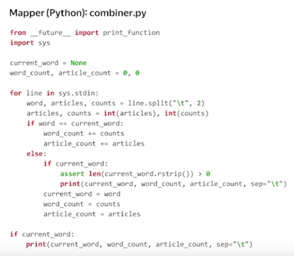
Example: Median
you have to get the whole dataset in place. So, the combiner is out of help in this case.
it's not always possible to speed up calculations with the combiner. 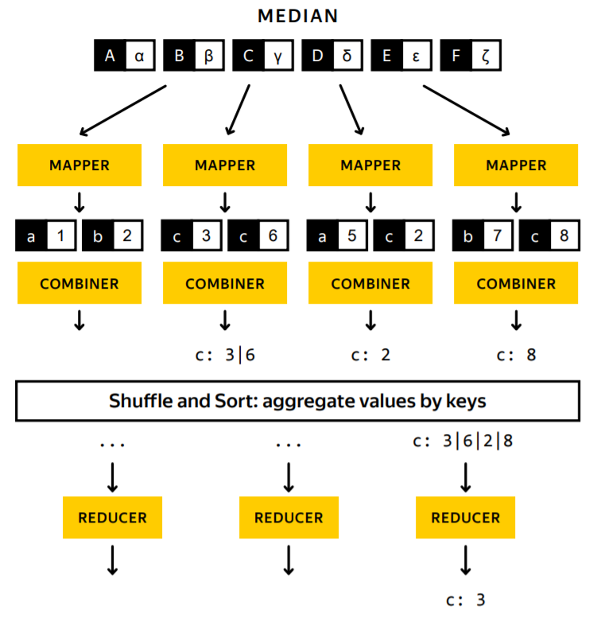
Partitioner
Partitioner is used to calculate a reducer index for each (key, value) pair
Collocation 搭配字詞
To find collocations of size two in a data sets, you need to count Bigrams.
Mapper: The following mapper will emit a sequence of bigrams followed aggregation during their use phase.
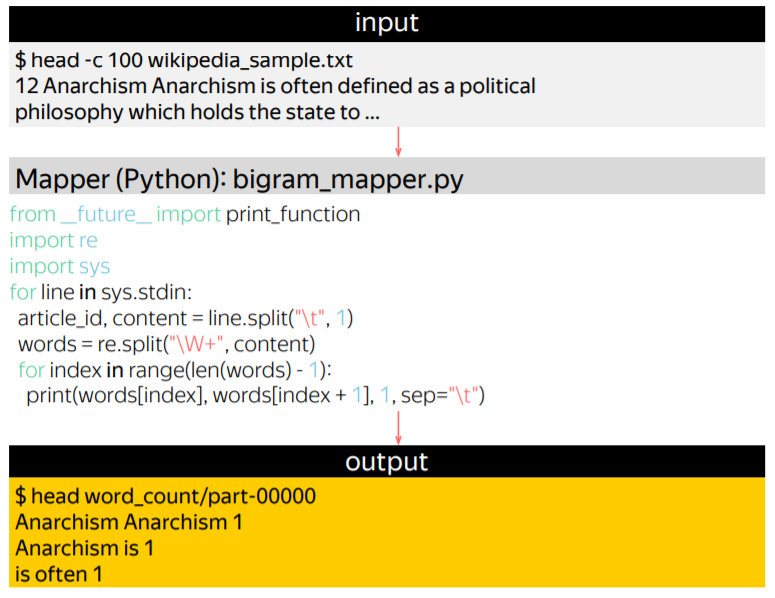
Hadoop MapReduce frame work will distribute and sort data by the first word. Because everything before the first tab character is considered a key.
Reducer: To sort data by the second word, you can update reducer.py to count all bigrams for the first corresponding word in memory-->memory consuming. 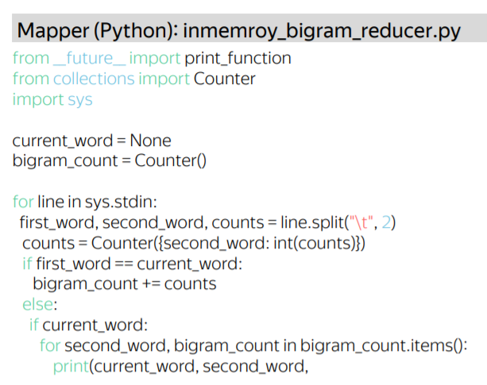
output of these MapReduce application which validates that New York bigram is a collocation 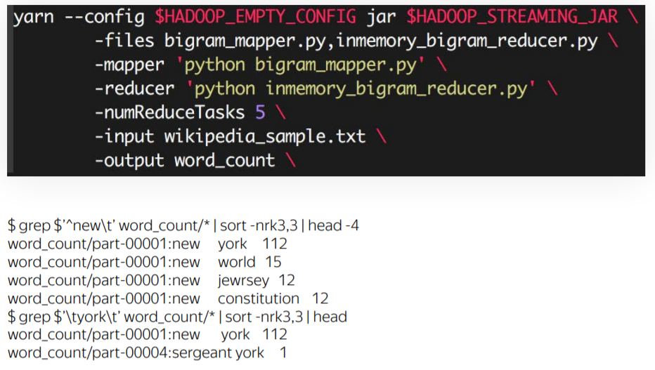
In addition to the unnecessary memory consumption there would be uneven lot on the reducers.
The benefit of MapReduce: it provides functionality to parallelized work.
e.g. In a default scenario you will have the far more lot on the reducer that will be busy processing this article The. But you have no need to send all of the bigrams starting with The to one reducer as you do calculations for each pair of words independently. 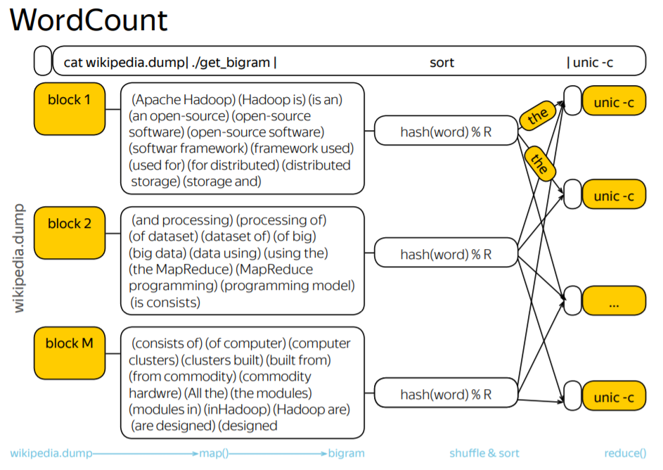
** partitioner**: > In this case you would like to split the line into key value pairs by the second tab character.
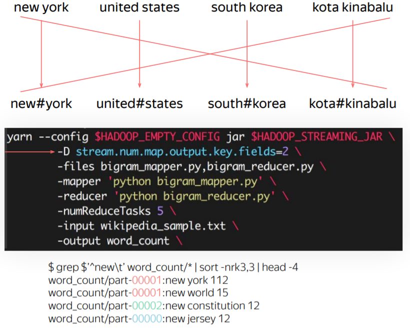
- complete this MapReduce job faster due to better parallelism.
- bigrams starting with any arbitrary word allocated in different files.
Example: IPv4 network addresses
IPv4 address contains four numbers called Octets delimited by dots.
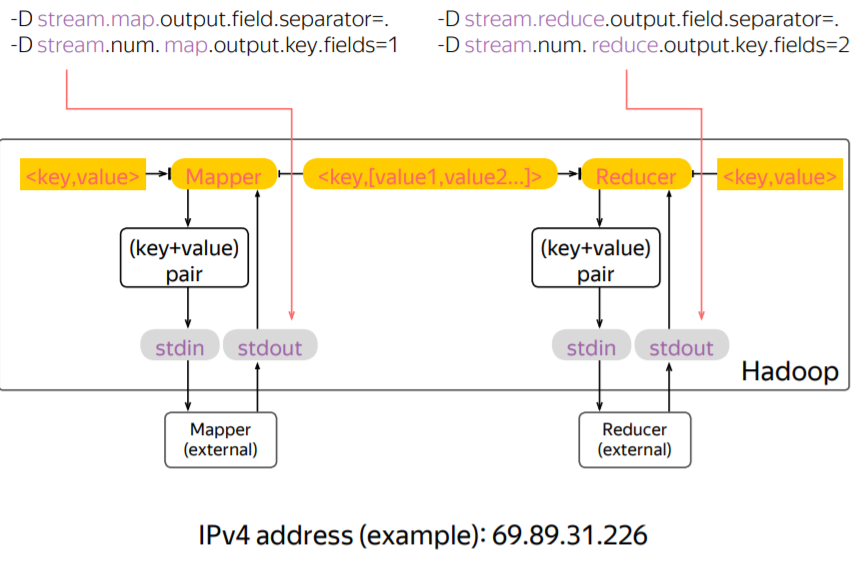
You can specify what a delimiter is and set number of fields related to a key. MapReduce framework will substitute this particular delimiter between num and num+1 fields to a tab character without any changes in your streaming scripts.
In this example, - I would like to split the output from the streaming mapper by the first dot. - And from the reducers stream and output, I substituted the next but one dot with a key value MapReduce delimiter, which is a tab character.
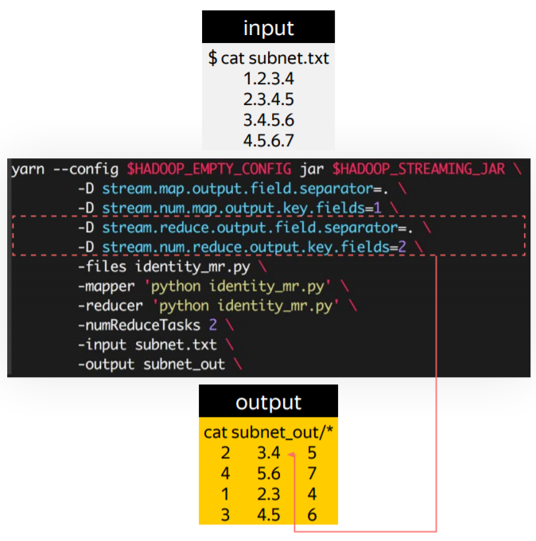
To partition IPv4 addresses by the second character of a first octet
- specify the field index and the starting character index in the start position
- specify the field index and the character index in the end position.
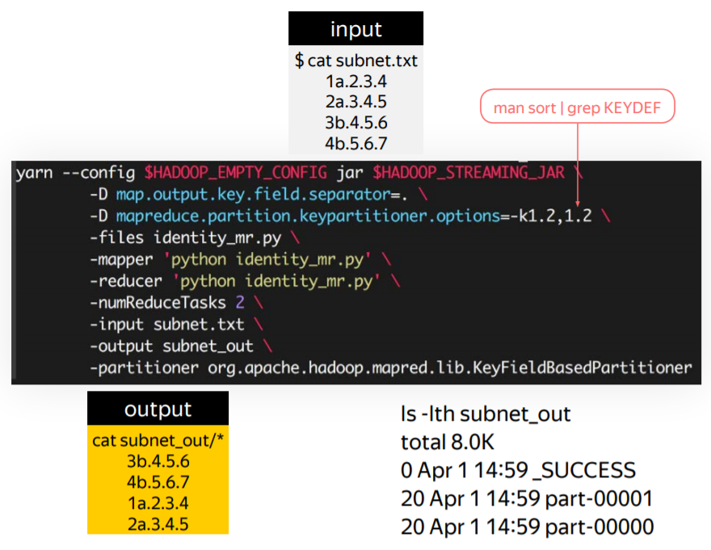
I have to set a special partitioner called KeyFieldBasedPartitioner.
Bigger picture: the whole pipeline of MapReduce application execution
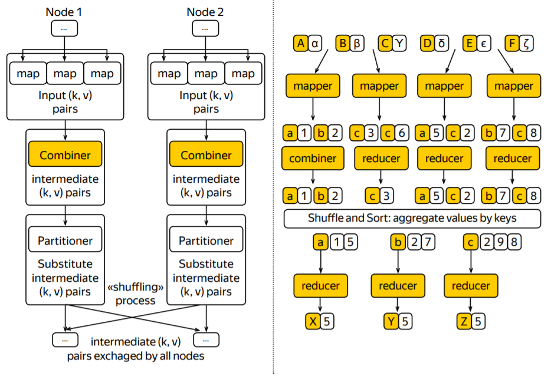
You have mappers at the top. Then the data goes through combiners, then it is distributed by the partitioner. Finally there is a reduced phase.
Comparator
All the keys in MapReduce implement writable comparable interface.
Comparable means that you can specify the rule according to which one key is bigger than another.
By default, you have the keys sorted by increasing order. For some applications, you would like to store them in a reverse order.
comparator compares records for sorting, it is not an optimization
Example: IPv4 network addresses
To sort octets of IPV4 address by the second octet in an increasing order, and by the third octate in a reverse order.

Speculative Execution / Backup Tasks
reduce your total waiting time by a factor of two
One of the most common problems that causes a MapReduce application to wait longer for a job completion is a straggler--a machine that takes an unusually long time to complete one of the last few tasks in the computation. 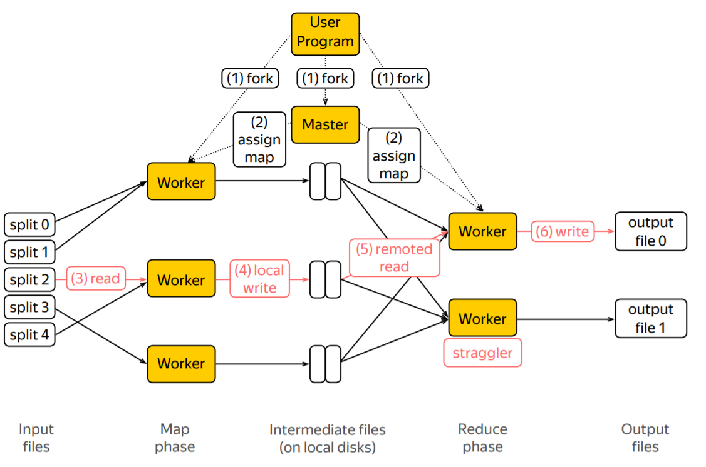
The solution of straggler: Backup Tasks
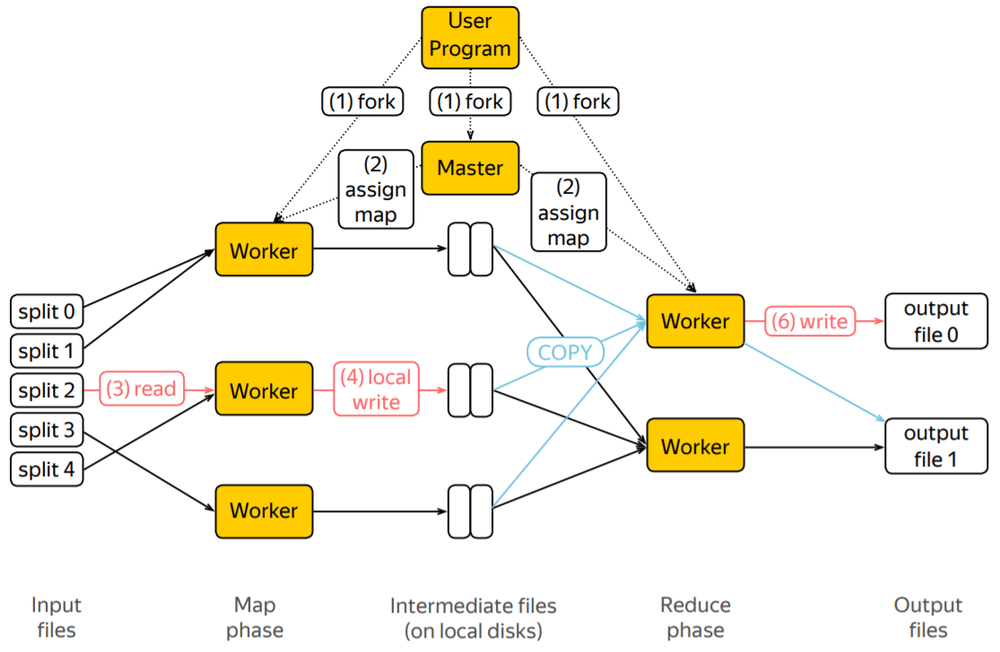 Due to the deterministic behavior of the Mapper and Reducer, you can easily re-execute straggler body of work on other node.
In this case, the worker which processes data, they first outputs data to a distributed file system. All the other concurrent executions will be killed.
Of course, the MapReduce framework is not going to have a copy for each running task. It is only used when a MapReducer application is close to completion.
Tuning:
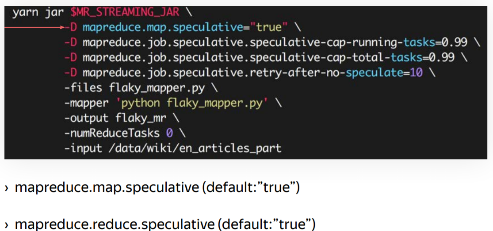
- Speculative Execution is set by default to true. set these flags to false if you don't allow multiple instances of some map or reduce task to be executed in parallel.
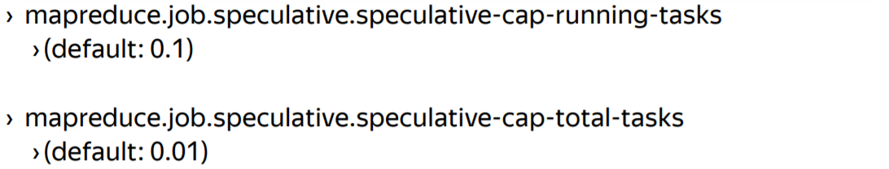
- These two flags can be used to specify the allowed number of running backup tasks at each point in the stream of the time and overall.
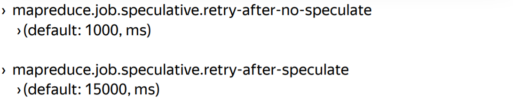
- you can tune timeouts in milliseconds that will limit the time of your waiting till the next round of speculation.
If you have successfully managed to speed up the process with speculation, then you should be able to find concurrent tasks killed by speculation on job trigger. 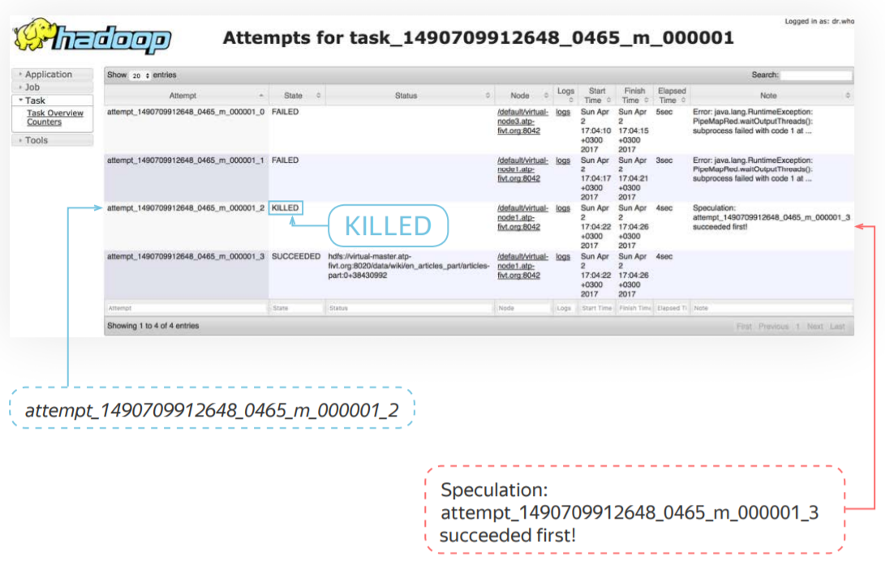
Compression
You can balance the process and capacity by the data compression.
Data compression is essentially a trade-off between - the disk I/O required to read and write data - The network bandwidth required to send data across the network - the in-memory calculation capacity(speed and usage of CPU and RAM). - ability of archives to be splitted by Hadoop
The correct balance of these factors depends on the characteristics of your cluster, your data, your applications, or usage patterns, and the weather forecast.
Data located in HDFS can be compressed. There is a shuffle and sort phase between map and the reduce where you can compress the intermediate data.-->optimization
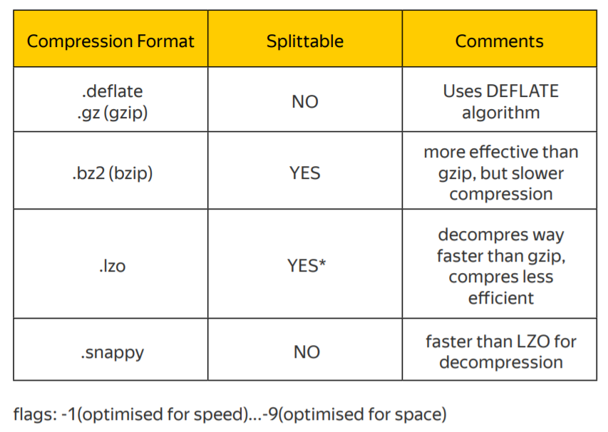
- Splittable column means that you can cut a file at any place and find the location for the next or the previous valid record.
- Native libraries that provide implementation of compression and decompression functionality, usually also support an option to choose a trade-off between speed or space optimization.
Pros & Cons: - gzip file is a deflate file with extra headers and a footer. - bzip is more aggressive for space requirements, but consequently, it's slower during the compression. - lzo files can be used where you read data far more frequently than write. - You can provide index files for lzo files to make them splittable. - Snappy,even more faster decompression, but you will only be able to split this file records.
A Hadoop codec is an implementation of a compression, decompression algorithm.
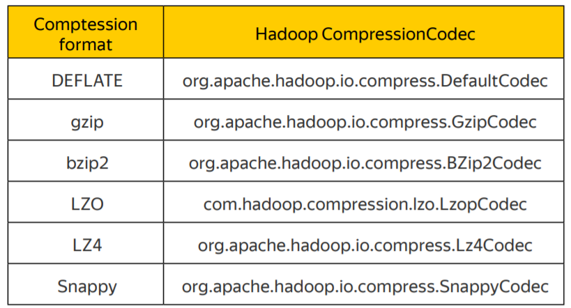
You can specify the compression parameters for intermediate data for output or for both
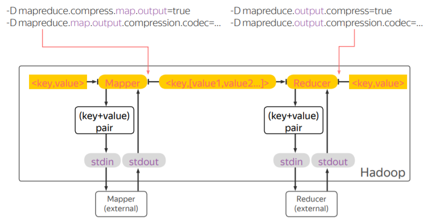
Rules of thumb: 1. gzip or bzip are a good choice for cold data, which is accessed infrequently. 2. bzip produce more compression than gzip for some kinds of files at the cost of some speed when compressing and decompressing. 3. Snappy or lzo are a better choice for hot data, which is accessed frequently. 4. Snappy often performs better than lzo. 5. For MapReduce, we can use bzip and lzo formats, if you would like to have your data splittable. 6. Snappy and gzip formats are not splittable at file level compression. But you can use block level compression and splittable container formats such as Avro or SequenceFile--> process the blocks in parallel using MapReduce
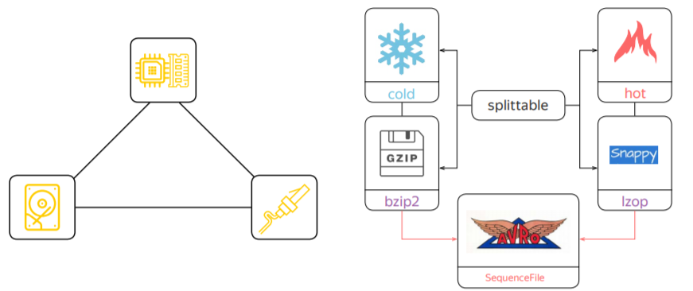